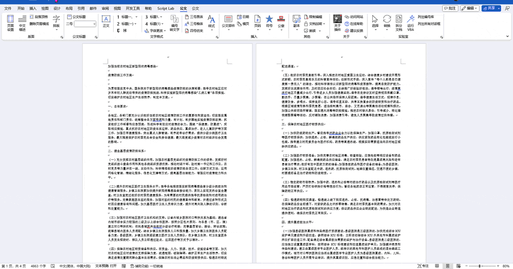
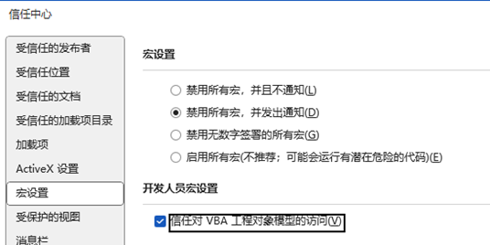
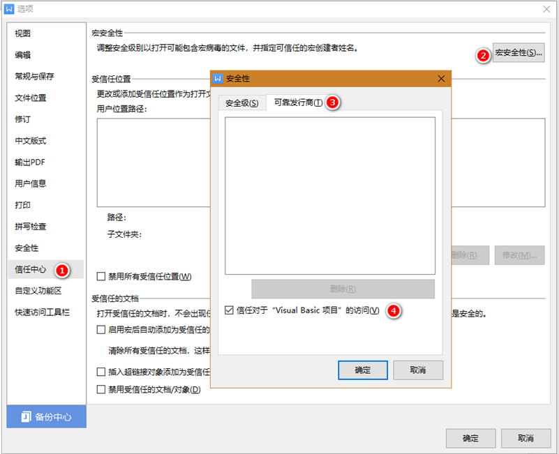

一、VBA 脚本 能做什么？
尽管公文排版助手已经提供了大量的排版功能，但是具体到每个用户，往往众口难调。若插件本身集成大量繁杂的功能，不仅会影响运行速度，还可能增加更多bug，逐渐变得臃肿，这并不符合“小而美”的思想。

- 实现更多功能，满足更多需求，比如《公文自动排版》、《多文件批量修改》、《图片批量调整》……
- 即用即走，文档不保存VBA代码，不占空间，减少安全隐患；
- VBA代码可见，可自由修改，保存和分享。
二、VBA 脚本的使用
（一）使用方法：
- 第一步：先保存文档。（避免错误的VBA文件造成损失）
- 第二步：点击“脚本”按钮，在打开文件对话框里，选择一个合适的VBA脚本文件即可。
- 第三步：部分VBA会有交互操作，按照提示进行。
（二）注意事项：
VBA脚本文件的后缀名通常为.vba或者.bas。
一般来说.vba是专用于本插件的文件，.bas则是Word Visual Basic编辑器导出的文件。
它们都可以执行，但是.bas并不是专为插件服务，有可能存在一些bug或兼容性问题，需要代码制作者略作修改。
注意：请务必保证VBA代码安全可靠，插件作者不承担VBA文件造成的任何损失！
您可将VBA文件上传到 https://www.virscan.org/ 进行病毒检验。
(三)常见问题:
VB Project访问不被信任
解决方法： 打开 Word 选项->信任中心->宏设置:

勾选“禁用所有宏，并发出通知”（保障安全性）
勾选“信任对VBA工程对象模型的访问”，（开启本功能）
无法执行指定的宏
通常情况下，是所选的.vba文件有bug，导致其无法执行。
您可以联系代码作者或分享人，也可以用记事本自行查看该文件。
所选文件非ANSI编码
解决方法：记事本另存时选择ANSI编码即可，其他编辑器可选为简体中文GB2312（代码页936）。
异常来自HRESULT:0x800A802D
运行错误的VBA代码导致Word解释器出错，在当前文档残留有执行失败的模块文件。
解决方法： 点击 清理VBA代码 按钮。或进入VB编辑器，删除所有代码，保存文档即可。
代码死循环Word停止响应
先尝试按 Ctrl+Break 中断执行，若不正确的代码导致死循环，解决方法如下：
第一步：关闭并重启Word。
第二步：遇到*禁用加载项*对话框时，千万记得点“否”：
第三步：用编辑器检查核实 VBA代码 是否兼容或存在Bug。
WPS Office 运行出错
解决办法：
第一步: 最新版WPS Office默认不再支持VBA，请在开发工具->切换到VB环境 ，或者更换其他支持VBA版本的WPS，
免费切换VB环境的方法: https://www.bilibili.com/video/BV19y4y1X7DE/
第二步: WPS Office 选项中 勾选“信任对于VB项目的访问”

如果以上操作后，还是提示同样信息，请确认VB环境安装正确。您可以通过录制VB宏来判断VB环境是否正常。如果不正常，请尝试修复WPS。
三、VBA脚本制作篇
（一）制作VBA文件最常用的方法
- 复制或下载别人分享的VBA文件,直接运行该文件即可。
- 使用Word宏功能来录制你的操作,然后编辑宏代码,导出为
.bas文件。 - 在Word内置的Visual Basic编辑器里编辑并调试代码,导出为
.bas文件。 - 经过调试验证后的代码文件，建议保存为
.vba再分享。
（二）制作VBA需要注意的问题
- 一个VBA只做一件事，制作VBA文件时,请只保留一个Sub……End Sub代码块用于执行,其他调用过程改用Function关键字。过程名称建议用中文,可前缀您的ID,具体参考我分享的演示代码文件。
- VBA文件请使用ANSI(简体中文GB2312)编码保存,Word VBA不支持UTF-8这类编码,会导致中文乱码。
- 不正确的代码可能导致Word崩溃、文档丢失或损坏，请勿故意制作和传播具有破坏性的VBA文件，否则可能触犯刑法第285和286条。
- 分享或复制VBA代码时，请尊重作者版权，注明来源，保留注释。
四、获取和分享VBA脚本
- 点此进入 Github VBA脚本讨论组 ， 获取和分享 VBA 脚本